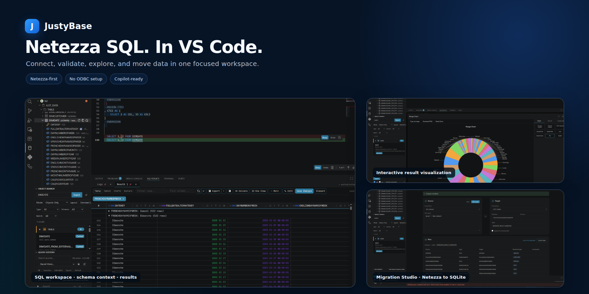
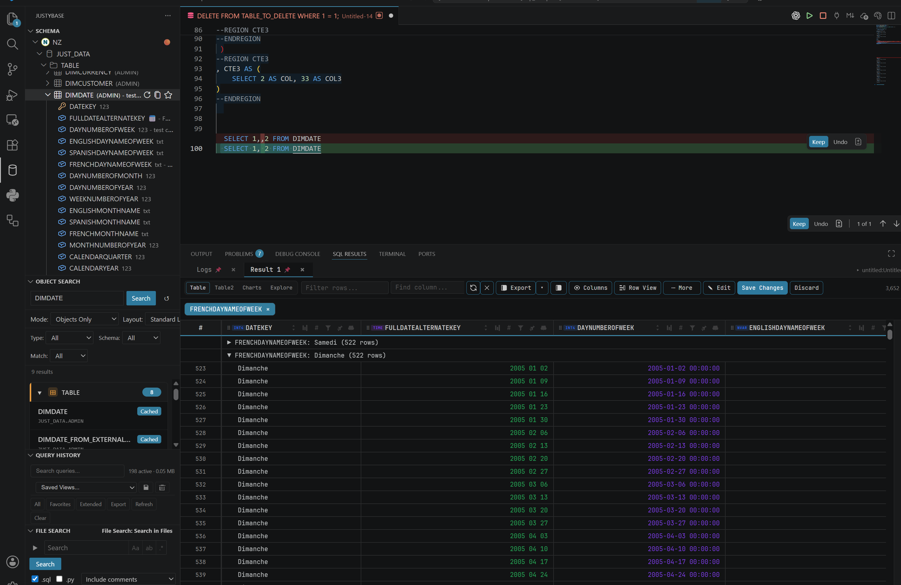
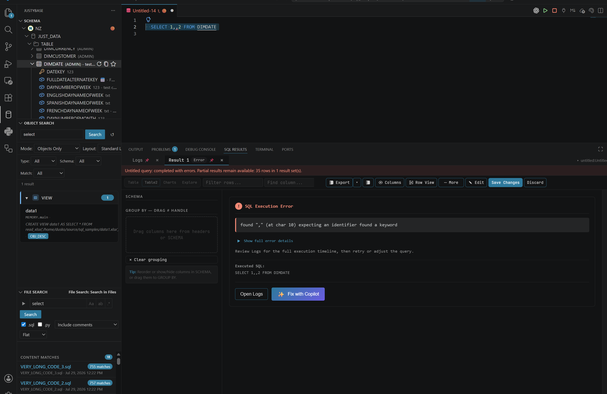
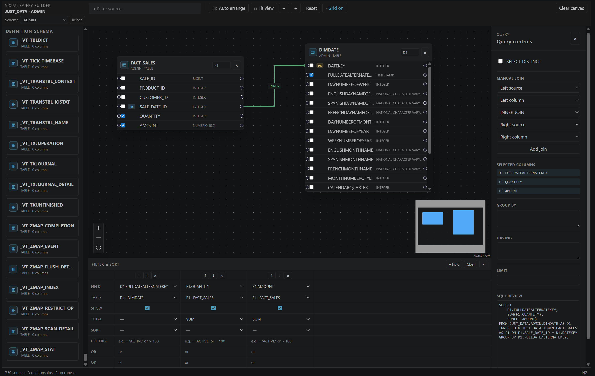
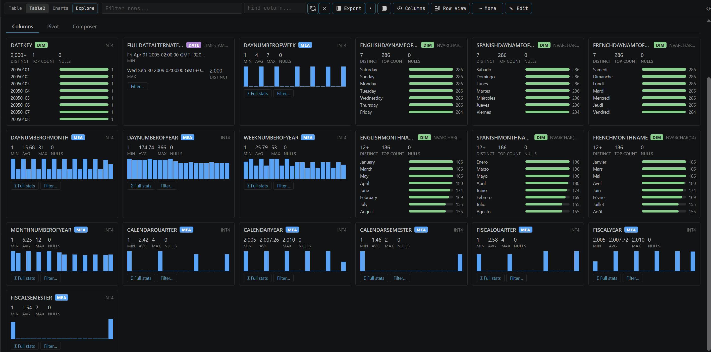
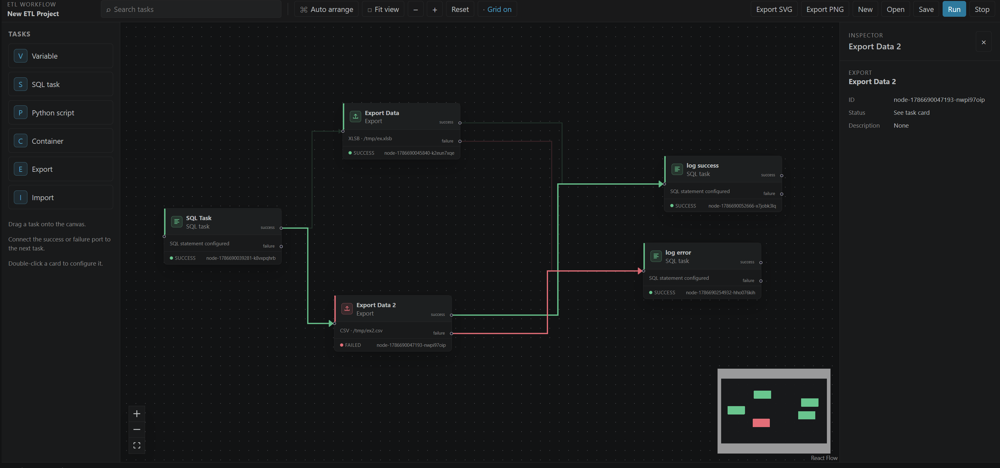
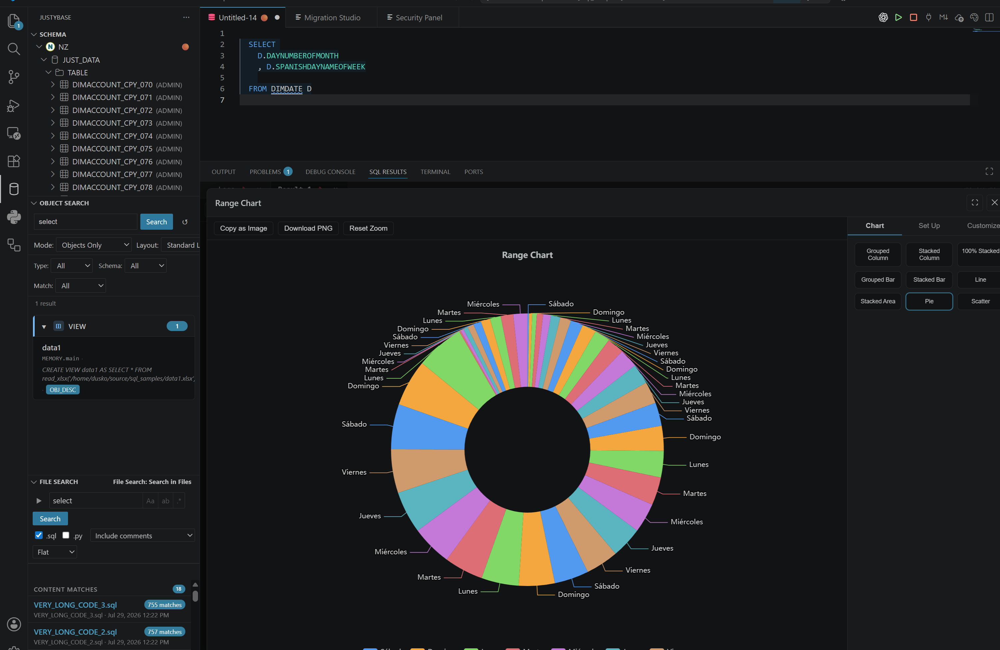
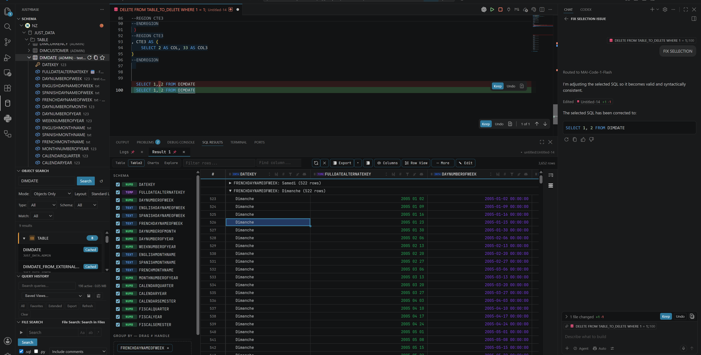

Connect in minutes
Save connections securely in VS Code secrets and start browsing databases, schemas, tables, views, and procedures.
Netezza SQL, sharpened for VS Code
A professional SQL workspace for IBM Netezza and PureData System for Analytics. Connect, write, validate, explore, and move data without leaving the editor you already use.
No external Netezza driver is required for the core extension.

One workspace, fewer handoffs
Keep the database context, SQL authoring, operational workflows, and result analysis close together. JustyBase turns VS Code into a focused home for the work between a question and a trusted answer.
Save connections securely in VS Code secrets and start browsing databases, schemas, tables, views, and procedures.
Use completion, formatting, semantic context, and parser-backed diagnostics while your query is still taking shape.
Profile columns, inspect distributions, build pivots, chart patterns, filter large result sets, and export what matters.
Generate DDL, compare objects, inspect sessions, maintain tables, build ERDs, and keep repeatable workflows close at hand.
See it in action
Explore the workflows that make JustyBase more than a query runner. Every panel is designed to keep the database close to the decision you are making.
Open the JustyBase view, connect to Netezza, and browse the objects you need without leaving VS Code. Connection credentials stay in the editor's secrets storage.
Read the query execution guide
Diagnostics explain what is wrong and quick fixes help you move from warning to corrected SQL with less friction.
Explore SQL diagnostics
Drag sources onto a canvas, connect columns, add filters and aggregations, and open the generated query in the editor.
Open the Query Builder guide
Move from a result grid to profiles, distributions, summaries, pivots, charts, and time-based views without writing another exploratory query.
Learn about result explorationSend query results to XLSB/XLSX, CSV, JSON, XML, SQL INSERT, Markdown, or Parquet with streaming and cancellation support.
See export and import options
Generate ERDs and visual workflows so relationships, dependencies, and repeatable data movement are easier to discuss.
Explore visual workflows
Query to insight
The results workspace gives you practical ways to understand what came back before you export it or hand it to someone else.


AI with explicit control
Optional Copilot workflows can explain, fix, optimize, or generate SQL while you remain in control of the final query and execution.
Ready when you are
Bring your Netezza workflow into VS Code and keep the path from SQL to insight in one familiar place.
code --install-extension krzysztof-d.justybaselite-netezza